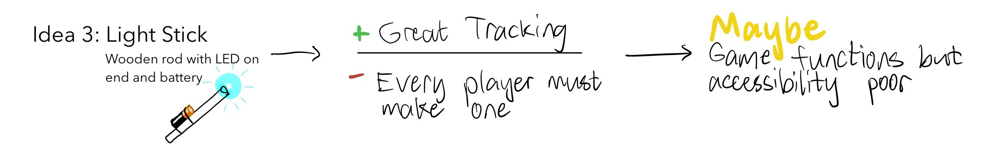

When I started building Beat Slicer, I had hardly an idea for what it would be. All I knew is I wanted to build a game that was cool - complex enough that it's mechanisms were not obvious, accessible enough to run on most personal computers, and elegant enough to be fun without a lengthy explanation of the controls. One of my favorite bits of wisdom is, "if something is well-designed enough, it does not need instructions to be understood."
Guided by these goals, I started thinking about features for my game, with three priorities in mind:

The idea of a 3D music-based motion game reminded me of Beat Saber, a widely popular virtual reality game. While super cool and very fun to play, Beat Saber requires a VR headset, which means most people couldn't play it conveniently. Thus, I was inspired to create a PC-based game based on Beat Saber with an emphasis on being easily accessible for the average person.
The DesignMotion tracking would be the biggest design challenge for my project.

My first two ideas proved unreliable or unstable, and would not produce a working game. They also heavily compromised accessibility, but I decided to focus on the first issue to at least have a functioning game.
I thought a bit about how cameras work, and realized that while a reflective object blurs into the background when moving, an emissive light source would create a long bright streak that would still be detectable. Thus, the next step was obvious:
I was finally happy to have functioning camera tracking, but was also pretty unhappy that the current setup required players to buy some parts and wire up an electronic contraption, which meant very poor accessibility. At the same time, I made the whimsical realization that any light source worked with my tracking algorithm, and was having some fun: